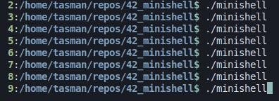
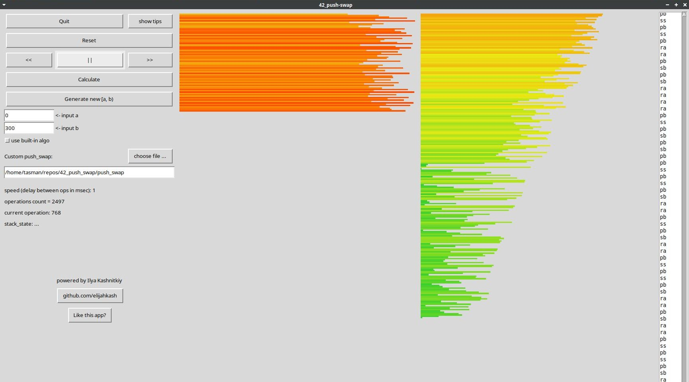
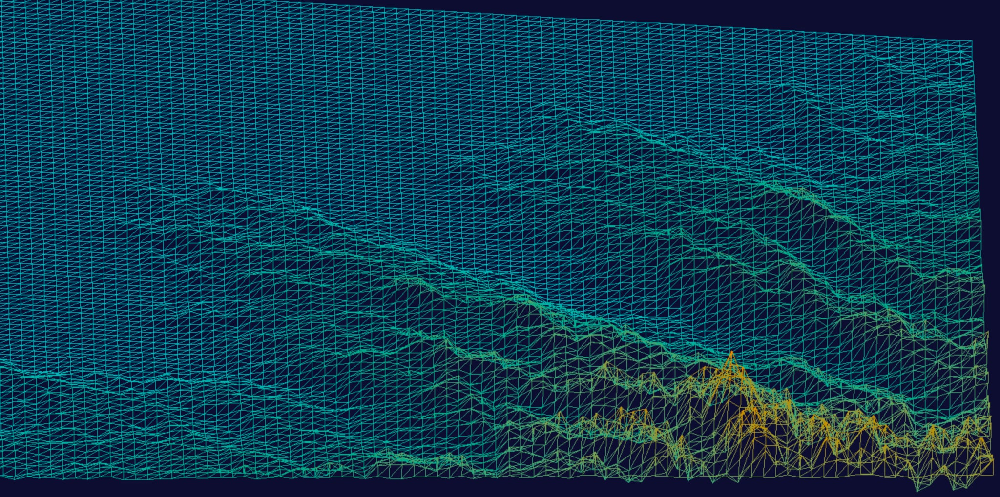

TASMAN DAY
Software Developer
mini_rt
mini_rt is a raycasting engine written in C. It renders a 3D scene from a plain text file that describes the 3d scene.

minishell
minishell is a simple shell written in C. It is a basic implementation of a shell that allows you to execute commands and navigate the file system.

push_swap
push_swap is a program written in C that sorts a list of integers with Tower of Hanoi-style limitations. Its efficiency is measured by the number of operations required.

fdf
fdf is a program written in C, that renders a 3D isometric wireframe model from a plain text file that describes the height of each point in the scene.
